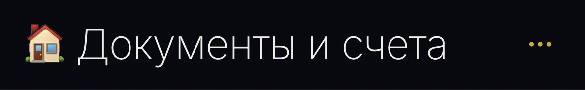

Шапка заметок — стало
Папка «Документы и счета» — 320
— 393 (iPhone 14/15 Pro)

Длинное имя «Медицинские анализы и выписки» — 320
— 393
Режим выбора — 320 (шапка той же высоты, 61px)
Меню «⋯» — 320, свой глиф